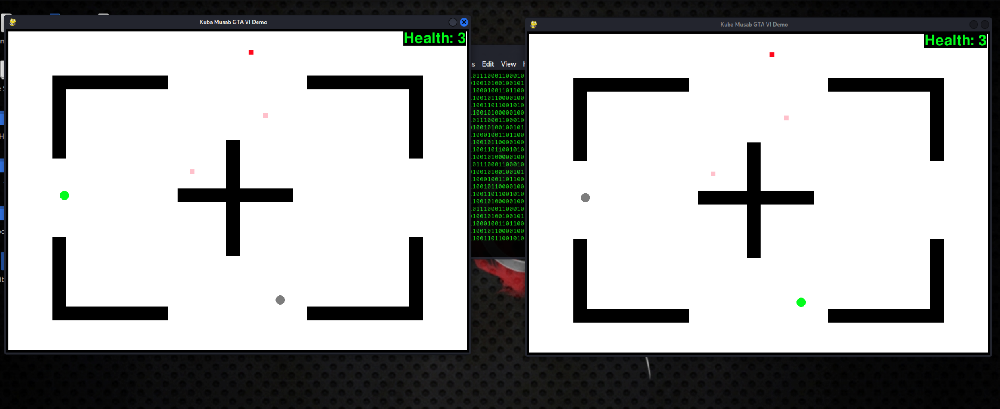

Protecting Princess Lulu Game
Protecting Princess Lulu is a 2D pixel rogue-like action-adventure game built with Python and Pygame. The game is made using an object-oriented approach and key programming concepts to create a captivating gaming experience. The game contains pre-rendered graphics, a useful and authentic GUI, an amazing audio and music design, fun game mechanics and elements to improve the gaming experience further. With future plans for expansion, including the addition of new levels and features, Protecting Lulu stands as a good example of my technical proficiency and dedication of game development.
 GitHub Link
GitHub Link
Fast-paced Multiplayer Shooting Game
Developed a high-paced, 2D multiplayer shooter game in Python with my teammate Kuba, using socket programming for real-time networked player interaction using UDP with custom implemented CRC for efficient, low-latency communication between server and clients, with game mechanics such as dead-reckoning, player health management, projectile shooting, and power-ups to enhance gameplay dynamics using PyGame library.
 GitHub LinkUDP Chat Server & Client For Unreliable Networks
Created a chat client and server program in Python specifically designed for unreliable networks, utilizing UDP connections and implementing a custom CRC for error detection with my teammate Kuba. The client ensures reliable message transmission by detecting and correcting errors with a high probability, using a custom CRC mechanism capable of detecting at least 16-bit errors. Messages containing uncorrectable errors are discarded to maintain data integrity. Additionally, the client supports various interface commands, including setting and retrieving configuration values from the server. With features such as message ordering, acknowledgment, retransmission, and prevention of duplicate messages, this project showcases my network capabilities tailored for unreliable network environments.
- Reach me for the source code and more details.
Chat Server & Client
Developed a text-based chat client and server program in Python using TCP sockets with my teammate Kuba. The client-server architecture enables multiple users to exchange messages in real-time within a user-friendly interface. The server supports up to 100 concurrent users, utilizing threading to manage simultaneous connections efficiently. It detects and handles user disconnections gracefully, ensuring smooth communication flow. This project demonstrates my proficiency in network programming, concurrent programming techniques, and server-client communication protocols.
- Reach me for the source code and more details.